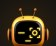
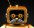

Claude Code, or another AI that works with your files. Your AI asks you one question, downloads the free kit from this site, checks it’s the real file and runs the kit’s own setup. If it asks to run something, allow just that once.# mudmode quick setup (for Claude Code or another AI that works with files)
Unzip it, open your AI in that folder, and type: Read README.md and set me up.
No email and no sign-up for mudmode. Plain text you can read.
Free to start · Full Kit $29, one time, no subscription · Pricing
Not affiliated with or endorsed by any AI provider.
In plain words, the 4 lines ask your AI to:
Ask you before anything risky. One yes covers one thing.
Be honest. Never claim it saved or did something it didn’t.
Keep answers short.
Know 4 things you can say: handoff, mudmode, mudmode status, mudhelp.
Answer first with one short line and one easy question.
The 4 lines you paste (every word)
Please work the mudmode way: ask me before anything risky like sending, buying or deleting (one yes = one thing), be honest, never claim you saved or did something you didn't, and keep answers short.
"handoff" = a short note for my next chat that starts with these four lines, and remind me to copy it. Just "mudmode" = reply "Woot! mudmode is on for this chat." and ask what I need. "mudmode status" = one line: where this chat stands and what's next.
"mudhelp" = list these words, one short line each, then: "Want more (daily report, settings)? Sign in, get the free Crew kit from mudmodecrew.com, add its mudmode-chat-lite.md to a Project (if your app has them), then say: Read mudmode-chat-lite.md and set me up. Without signing in, it may not be kept for next time."
Reply now with only "Woot! mudmode is on for this chat." and one easy question.
Not sure? Paste them into the AI you already trust and ask what it would do with them. Don’t like the answer? Close the chat: nothing was installed. (If your app keeps a memory of chats, you can delete it there.)
When something goes wrong, the crew writes it down, and fixes what holds it.
1Something goes wrong
2One line in the book
3It comes back?
4It gets a check
What our own records show
On one app we build (Sep 29 – Oct 21, 2026): every mistake that came back after its lesson was written, 10 of 10 in our records, came from a lesson with no automatic check. We found no recorded repeat of a lesson once it had one.
One app, one owner, about three weeks, small numbers, and the crew wrote its own records. A check that catches a repeat often isn’t written down as a mistake, so this isn’t proof that checks prevent mistakes, or proof for anyone else.
Verdict: WARN the study’s own verdict: supported in this one project, not proven in general
Two real lessons, and what holds each promise
One short line: the rule, what happened, the date, and what holds it now. Each card comes from a real line in our own crew’s books, retold in plain words with private details taken out. Not every trick is here.
Held by a checkOct 24, 2026
A daily limit could be got around
What happened: one of our own tools took its “today” from a time-zone setting in the command that started it, so changing that one setting got around its daily limit. Our attack tester found it.
What changed: the tool now works out the day one fixed way and refuses to run when that setting is present. Its self-test checks this.
Held by people, for nowOct 24, 2026
Our own Start box was too much
What happened: it passed its reviews, but they checked the words, not how it felt. The first real try poured about 14,000 characters into a chat.
What changed: the first prompt is now 4 short lines, and our rule now is a feel test (a real try by a person or a real AI) for anything a new user touches, before it ships.
No automatic check holds this one yet. In our records, lessons held only by people are the kind that came back, so we watch this one.
We keep the book short: when it passes about 80 lines, similar lessons are merged and settled ones move to a decisions file. Lines that leave are moved to an archive, never deleted.
A check holds it
The copy buttons won’t copy setup text whose file has been changed.
Setup has your AI check the download’s fingerprint before unzipping it, and stop if it doesn’t match.
Full Kit, in Claude Code: optional hooks stop the risky commands they recognize until you OK them (a helper, not a lock: you still decide), and save a handoff before Claude Code compacts a long chat.
In the free Crew kit and the Full Kit, your AI is asked to:
Ask before anything risky. One yes = one thing.
Hand off when a chat is about 75% full.
Get a separate look before anything goes out.
Read its lessons before it starts (with the lessons book on).
Rules, not locks: keep checking its work.
In full mode (the Full Kit starts in it; in the free kit, say “mudmode full”), every finished job gets a verdict from a separate, read-only reviewer: PASS · WARN, a pass with every note listed · FAIL, which stops it until you decide, in your own words. In lite mode, the review is for anything that goes out.
Free Crew kit: the lessons book and the all-work reviewer are modules you can turn on (or say “mudmode full”). The Full Kit starts with both on.
One yes covers one thing. The next risky step asks again.
Mock-up, not a real AI reply. Imagine your AI can send email.
AIReady to email the letter to Sam. Send it?
YouYes, send that one.
AISent. I’ll ask again before the next one.
Rules your AI follows, not locks: keep checking its work.
Where do I start?
Try it here, then cross over.
1Try itAny chat · paste once
2Keep itOne kit file · in a Project
Cross over →
3On your computerAn AI that works with files
Say “handoff” before you stop: your AI writes a short note so your next chat can pick up where this one stopped (in a chat app, you paste it in).
Compare the three, row by row
1Try itAny chat · paste once
Asks firstThis chat only
Handoff noteYou copy it
Status + reportStatus: one line
Second lookYou check
Chat healthNot in it
Old chat steps asideNot in it
Works in your filesNo
Free · no download
2Keep itOne kit file · in a Project
Asks firstEvery chat here
Handoff noteYou paste it
Status + reportYes
Second lookFresh chat or you
Chat healthHands off at ~75%
Old chat steps asideNot in it
Works in your filesNo
Free Crew kitFull Kit
Cross overOne folder Asks before outside it Deletes nothing
Cross over to here
3On your computerAn AI that works with files
Asks firstEvery connected chat
Handoff noteA saved file
Status + reportYes
Second lookSeparate pass
Chat healthHands off at ~75%
Old chat steps asideFull Kit
Works in your filesBacks up first
Free Crew kitFull Kit+ Claude Code hooks
YesPartlyNot in itFull Kitadds the crew roles book
In a chat app you get one AI working the mudmode way. The crew of roles comes with the Full Kit, in an AI that works with your files, like Claude Code.
Same chart in words
1, Try it: paste the first prompt into any chat. It asks first in that chat only, writes a short handoff note you copy, and answers “mudmode status” in one line. It has no daily report, no second look (you check its work), no chat-health handoff, no stepping aside and no file work. Free, no download.
2, Keep it: add one kit file to a Project. It asks first in every chat in that Project, gives a handoff block you paste into the next chat, answers “mudmode status” and “mudmode report”, hands off when it judges the chat is about 75% full, and asks for a separate look (a fresh chat or you) before anything goes out. The old chat doesn’t step aside. Free Crew kit or Full Kit.
Cross over: setup makes one mudmode folder, asks before writing anything outside it, and deletes nothing.
3, On your computer: an AI that works with files (like Claude Code). Every chat you connect at setup asks first, the handoff is a saved file, status and report work, a separate pass reviews work before it goes out, it hands off when it judges the chat is about 75% full, and it backs up before it changes a file. With the Full Kit, the old chat steps aside. Free Crew kit or Full Kit; the Full Kit adds the crew roles book, and in Claude Code optional hooks that help you keep the ask-first list.
Rules your AI is asked to follow. AI tools can still make mistakes, so keep checking their work. The AI app you use may have its own costs.
Will I lose my place?
Say “handoff” before you stop.
Today’s chathandoff
A short note
Next single action:finish the cover letter
In a chat appYou paste it first
On your computerA saved file, read at start when connected
Next chatStarts from next single action
Same chart in words
Before you stop, say “handoff”. Your AI writes a short note that starts with the next single action. In a chat app, it gives you the note as a block: paste it as the first message of your next chat. On your computer, the note is saved as a file (HANDOFF.md) in your mudmode folder, and each chat you connected at setup reads it when it starts; if you didn’t connect it, start the chat by asking it to read the file. Either way the next chat starts from the next single action. The cover letter is an example.
Example note. Free Crew kit and Full Kit. The first prompt makes a shorter note you copy yourself.
In the mudmode Full Kit
Done isn’t done till it’s checked.
Made-up example:
Builder: “Done. Tests pass.”
Apprentice: “Reran them. Two fail.”

Inspector:FAIL “Blocked.”
Builder: “Fixed.”
Inspector:PASS
Foreman: “OK to put it live?”
mudmascot: “Waiting for your OK.”
You: “Yes.”
Your AI plays every part, each in its own pass. The builder never signs off its own work.
See pricing. Roles are jobs your AI does by following the kit’s rules; AI tools can still make mistakes, so keep checking their work. Results vary.
The crew needs an AI that works with your files, like Claude Code. In a chat app, you get one AI following mudmode rules.
The rest of the crew, and where its lessons live
Super: watches the whole job
Attack tester: plays the bad user
Legal: looks up the rules
Laborer: odd jobs
New faces (pictures, not extra kit roles):
Ironworker: built for steel

Keeper: keeps the rules and the OK ledger
mudbrick: the crew’s own name
Night Shift: for work that runs 24/7
Scout: brings news back from the web
Your crew goes with you. It learns from your lessons, kept in your own folder. It learns from ours only when you install a mudmode kit update. Sharing a lesson back is always opt-in and 18+; your post shows your GitHub username, and the kit credits you only if you ask (mudmode lesson terms).
Pick your crew
Start free and keep it as long as you like. No subscriptions. Checkout is through Gumroad.
14-day money-back promise. Free Crew kit: Personal Use License. Paid kits: Full Kit License (your own use, including your own job). See also the terms. Payments are handled by our checkout partner; see the privacy note. Results vary.
What’s in each kit
Upgrade when you want the full book, every crew role, and kit updates in your Gumroad library.
The free Crew kit starts lite: one short page of rules, more when you want it (say “mudmode full”). The Full Kit starts in full mode. The safety rules are on in every mode.
mudmode Crew
Crew kit that works on its own
Core safety rules
Safety fixes as soon as they're ready (the download here is always the newest; the kit's optional update check tells you)
Members chat
Share lessons with the hive
A regular lesson digest in the members chat (starts once the first member lessons are approved)
What to say
Read mudmode-chat-lite.md and set me up.Setup in a chat app.
mudmode statusHow it's going and what needs you.
mudhelpThe words you can say, one short line each.
handoffThe next chat picks up where you stopped.
Your OK, naming the one thingApproves one action, one time.
Tell your AIs it's fine to skip asking first before risky actions.
Full Kit
mudmode keeps learning from our own crews' real work. For 12 months, you get the kit updates we make from what it learns: dated packs in your Gumroad library, and we tell you by email when one lands. We may offer an optional renewal for more update time later. Nothing ever renews by itself.
Everything in Crew
The full mudmode kit and setup guide
The full mudmode book, plus the one-page core in lite and full versions
Setup your AI runs for you: a double-click installer for Mac, setup scripts for Windows and for Mac or Linux, and setup files for chat apps
Ready-made rules files for Claude, Grok and other AIs
10 templates, including full and lite handoffs, a daily report, an OK ledger and a lessons book
Optional Claude Code hooks that help you keep the ask-first list (a helper that can be got around, so you still decide), save a handoff before a long chat is compacted, and load it back at the next start
Optional instant wake for Windows (separate add-on download): your PC wakes your bot when a note file grows
Small tools: a privacy scrub check and an adapter generator
Ready-made setups for popular AI assistants
New lessons as they land once the hive starts (the free kit gets a regular lesson digest in the members chat)
Buy once, keep it. Your kit keeps working after your update year ends. Safety fixes are free for everyone as soon as they're ready: the free download here is always the newest, and Full Kit owners get them in their Gumroad library.
Your crew, your call. mudmode gives you the starting rules. What your crew learns from there (which lessons stay, which rules you add, what you say yes to) is up to you. Read what your AIs suggest before you keep it, and keep checking their work.
Works on most ordinary computers; no graphics card needed. Team, client or organization use: see our contact details. Questions before you buy? See the FAQ.
Community and members chat
Talk with the owner and other members, share lessons and ideas. Everything runs on GitHub Discussions: sign in with a free GitHub account to post.
Found a fix your AI should never forget? You can send it to mudmode so other members can benefit. Optional, and only if you're 18 or older.
Scrub it. Say "draft a lesson to share" to your AI, then check it yourself: no passwords, keys, names, emails, account names or anything private. Your AI never sends it for you.
Read the mudmode lesson terms. If you agree, put the agreement line first, then how you'd like credit.
Post it as a reply in the Lessons thread on GitHub, in this exact form, under 600 characters, with no links or code:
I agree to the mudmode lesson terms (v2) and I'm 18 or older.
Don't credit me
lesson: what went wrong, in one line
fix: what to do instead
result: what changed after the fix
confidence: low, medium or high
What happens next. Every lesson gets a privacy scrub and a human review, and a lesson is used only after it's approved. Most aren't used as sent, and sending one doesn't mean it will be. The screening step for shared lessons is still being built, and until it passes its own checks, no member lesson is used. Details are in the lesson terms and the privacy note.
FAQ
Who decides what my crew learns?
Your crew, your call. mudmode gives you the starting rules. What your crew learns from there (which lessons stay, which rules you add, what you say yes to) is up to you. Read what your AIs suggest before you keep it, and keep checking their work.
I first set up mudmode with 1.3.2. How do I turn the short name "mud" off?
Update as usual: unzip the new kit to a new folder and run setup again. Setup only adds the "Short name" line to CORE-LOCAL.md when mud is already taken on your computer or it can't check, so a folder first set up with 1.3.2 may not have that line yet. To turn the short name off there, add this line to CORE-LOCAL.md yourself: - **Short name "mud" (on or off; on: "mud status" works like "mudmode status"):** off. A rerun adds no second line.